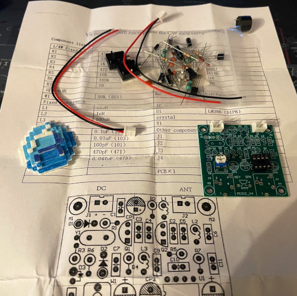
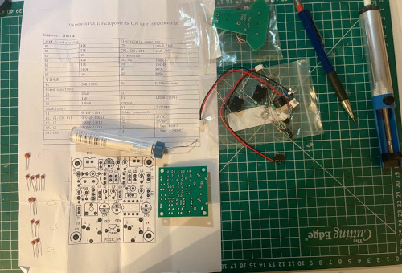
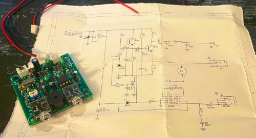
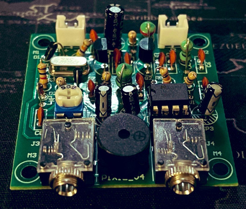

Pixie QRP Radio
Can't remember where i first heard of this little radio, might have just been through one of those wallet damaging Amazon rambles!
The kit had been sitting in my draw for roughly 6 months, with other projects, and work taking away my free time.
Over this most recent holiday I fianlly opened the shrink wrap and got stuck in. The kit wasn't too hard to work out, even with non-existant instructions.
It's always fun learning new things and pushing yourself. This is far from the first electronics project that i've put together, even if it is the first i'm adding to the site.
One of the more insteresting parts of the build (from my point of view) was working with new components. Although no stranger to a soldering, I'd never worked with inductors before the Pixie.
Please see a couple of pictures of the build, I don't know how much use this radio will get, I have other, much more capiable radios to actually use, and with my non-existant Morse ability I should probably stick to Yaesu's for the time being!
   